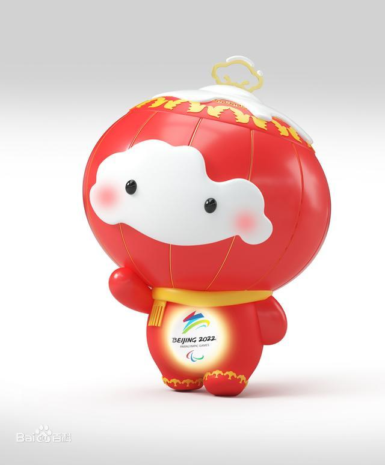

雪容融介绍
雪容融（Shuey Rhon Rhon），是2022年北京冬季残奥会的吉祥物，其以灯笼为原型进行设计创作，主色调为红色，头顶有如意环与外围的剪纸图案，面部带有不规则形状的雪块，身体可以向外散发光芒。
2019年8月21日，2022年北京冬奥会和冬残奥会组委会（简称北京冬奥组委）确定选用雪容融为冬残奥会吉祥物。2019年9月17日，吉祥物雪容融正式对外公布。
雪容融的整体造型渲染了2022年中国春节的节日气氛，吉祥物灯笼外形的发光属性寓意点亮梦想、温暖世界，代表着友爱、勇气和坚强，体现了冬残奥运动员的拼搏精神和激励世界的冬残奥会理念。
